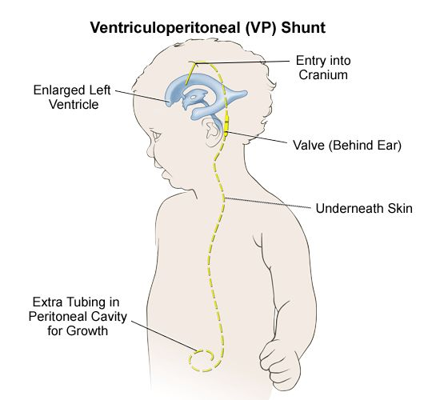

SPINA BIFIDA &
HYDROCEPHALUS
What is Spina bifida
Spina bifida is a birth defect that occurs when the spine and spinal cord fail to form properly. It's a neural tube defect. The neural tube refers to the structure that develops to form a baby's brain, spinal cord and the tissues enclosing them.
It forms in the earliest stages of conception, typically within the first 28 days of pregnancy. In babies with spina bifida, a portion of the neural tube fails to develop or close properly, leading to spinal, bowel and bladder dysfunction. Spina bifida can range from mild to severe, depending on the type, size, location and related complications. Where necessary, the earliest medical intervention for spina bifida involves surgery — although, this doesn't always resolve the defect completely.
Spina bifida can range from mild to severe, depending on the type, size, location and related complications. Where necessary, the earliest medical intervention for spina bifida involves surgery — although, this doesn't always resolve the defect completely.
Types of Spina bifida
-
Spina bifida Occulta
Spina bifida Occulta is the mildest and most common type of spina bifida. It results in a small gap in one or more of the bones of the spine (vertebrae), some hair or a small protrution may also be present on the back. Most people who have spina bifida occulta don't even know they have it.
-
Meningocele
This is a rare type of spina bifida which is characterized by a sac of spinal fluid bulging through an opening in the spine. No nerves are affected in this category and the spinal cord isn't contained in the fluid sac. Babies with meningocele may experience minor problems including but not limited to bladder and bowel dysfunction.
-
Lipomyelomeningocele
The Lipomyelomeningocele type of spina bifida occurs when the outer part of the vertebrae fails to close completely, leaving an opening in the bones of the spine. Fatty tissues usually push through this opening and may cause compression of the nerves.
-
Myelomeningocele
Also known as open spina bifida, is the most severe type. The spinal canal is open along several vertebrae (small gaps in the bones of the spine) in the lower or middle back. The membranes and spinal nerves push through this opening at birth, forming a sac on the baby's back, typically exposing tissues and nerves. This exposes the baby to life-threatening infections and may also cause paralysis of the lower limbs and bladder and bowel dysfunction.
90% of children born with meningocele and myelomeningocele are usually at the highest risk of acquiring Hydrocephalus.
The different types of Spina bifida explained
What causes spina bifida?
The causes of Spina Bifida are not certainly known, but research has shown that about 78% of the reported cases resulted from the lack of folate in expectant women; Especially during the first trimester (three months) of pregnancy. It is therefore recommended that all women of childbearing ages eat fortified foods as regularly as possible, take folic acid supplements and ensure proper nutrition at all times.
" A woman who gives birth to a child with Spina bifida is at a high risk of getting another child with the same condition; Unless her folate levels are increased. "
Effects of Spina bifida
Depending on the severity of a child's condition, spina bifida may cause the following complications:
| COMPLICATION | MEDICAL INTERVENTION | |
|---|---|---|
| Paralysis of the lower limbs | Corrective surgeries and rehabilitation | |
| Clubfoot | Corrective surgeries and rehabilitation | |
| Spine deformities (scoliosis, lordosis) | Corrective surgeries, rehabilitation and use of corsets | |
| Recurrent wounds | Lifelong care i.e. continence management, skincare etc., | |
| Skin conditions | Lifelong care i.e. continence management, skincare etc., | |
| Poor bowel and bladder function and control | Lifelong care i.e. continence management, skincare etc., |
Children born with Spina Bifida need training on Continence care (Clean Intermittent Catheterization - CIC and bowel washout) to protect their kidneys from infections and skin-related issues.
What is Hydrocephalus
Hydrocephalus is a condition where an abnormal build-up of fluid occurs in the brain. This fluid is known as cerebrospinal fluid (CSF) — a clear, colorless fluid surrounding the brain and spinal cord.
Normally, CSF should flow through the ventricles (a network of cavities within the brain) as a nutrient delivery and waste removal system for the brain. It bathes the brain and spinal cord, protecting and cushioning them from injury. Naturally, CSF should be reabsorbed into the bloodstream after circulating through the brain and spinal cord.
The body usually produces the CSF it needs for each day and then reabsorbs it into the bloodstream after it flows through the brain and spinal cord. However, when the normal flow or absorption is blocked, it results in a buildup within the brain causing the ventricles to expand. This causes pressure inside the brain and increases the size of the head. Prolonged pressure from too much CSF can lead to blindness and brain damage.
Types of Hydrocephalus
Hydrocephalus occurs in the brain when the levels of CSF produced and absorbed is not balanced. This condition can be classified in different categories based on the nature of CSF blockage and imbalance.
-
Communicating (non-obstructive) Hydrocephalus.
This form occurs after the CSF produced is trapped in the brain but it can still flow between the brain ventricles.
-
Non-communicating (Obstructive) Hydrocephalus.
This form occurs when the CSF produced is trapped in the brain and blocked in one or more of the narrow passages that connect the ventricles. This blockage may arise from a malformation or a narrowing of some kind.
-
Congenital Hydrocephalus
This form of Hydrocephalus is mostly present at birth. It may also be caused by other issues such as infections or trauma during fetal development. Congenital Hydrocephalus may be linked to other birth defects affecting the spine.
-
Acquired Hydrocephalus
This form develops after birth. It can be caused by infections like meningitis, bleeding, injury, brain hemorrhage or tumors.
-
Normal Pressure Hydrocephalus (NPH)
This type usually develops in adults aged 55 or older. It often occurs after a head trauma, an infection or an internal bleeding in the brain.
-
Ex Vacuo Hydrocephalus
This occurs when there is a damage to the brain caused by stroke or a traumatic injury. This type of Hydrocephalus may not be dangerous for some people and treatment may not be necessary.
Hydrocephalus explained
What causes hydrocephalus?
The causes of hydrocephalus usually vary due to various factors. It may arise from:
- Trauma to the brain before, during or after birth.
- Brain tumors.
- Premature births.
- Severe Spina Bifida (Myelomeningocele and Meningocele)
Children born with severe spina bifida (Myelomeningocele and Meningocele) end up living with two complex disabilities; Spina Bifida and Hydrocephalus(SBH). Like other congenital (born with) conditions, children with hydrocephalus require early medical intervention to avoid complications such as blindness due to pressure on the optic nerves that give light to the eyes, brain damage, convulsions, celebral palsy and Autism.
TREATMENT OF HYDROCEPHALUS

Treatment of hydrocephalus involves putting a shunt (a small pipe) in the brain to act as an artificial outlet for draining excessive CSF into the stomach (peritoneal). Advancements in medical research, now allow treatment using Endoscopic Third Ventriculostomy (ETV). This procedure offers higher chances of survival since shunts are prone to infections and failure. ETV surgical procedures are now available at the Bethany Kids, Kijabe Mission Hospital at subsidized rates. Bethany Kids, Kijabe hospital is SHAK Nairobi's key partner.
A VP (Ventriculoperitoneal) shunt, being a foreign tool introduced to the body, cannot function as a natural component. It is therefore prone to failure and malfunction.
Treatment of hydrocephalus involves putting a shunt (a small pipe) in the brain to act as an artificial outlet for draining excessive CSF into the stomach (peritoneal). Advancements in medical research, now allow treatment using Endoscopic Third Ventriculostomy (ETV). This procedure offers higher chances of survival since shunts are prone to infections and failure. ETV surgical procedures are now available at the Bethany Kids, Kijabe Mission Hospital at subsidized rates. Bethany Kids, Kijabe hospital is SHAK Nairobi's key partner.
A VP (Ventriculoperitoneal) shunt, being a foreign tool introduced to the body, cannot function as a natural component. It is therefore prone to failure and malfunction.
The table below highlights the signs of shunt malfunction according to the user's age:
| INFANTS | TODDLERS | CHILDREN/ADOLESCENTS |
|---|---|---|
| The infant's head is enlarged | The toddler's head is enlarged | Fever |
| Prominent scalp veins | Vomitting | Vomitting |
| Swelling or redness along shunt tract | Fever | Headache |
| Fontanel is full and tense when the infant is upright and quiet |
Irritability and/or sleepiness (lethargy) |
Vision problems |
| Fever | Headache | Irritability and/or sleepiness (lethargy) |
| Vomiting | Swelling or redness along shunt tract | Personality change |
| irritability and behavior change | Loss of previous abilities (sensory/motor functions) |
Loss of coordination or balance |
| Sleepiness | Seizures | Swelling or redness along shunt tract |
| Downward deviation of the eyes | Changes in speech | Difficulty in waking up or staying awake |
| Seizures | Onset or increase in strabismus | Seizures |
| Decreased activity | Decline in academic performance |
Relationship between Spina bifida & Hydrocephalus
Almost every child born with spina bifida ends up acquiring hydrocephalus if the proper medical interventions are not undertaken early enough.
Spina bifida may affect the nervous system, bones, muscles, kidneys and bladder and cause hydrocephalus and/or other complications.
The location on the spine where the undeveloped area occurs is called the Spina Bifida level. Since nerve damage at this point prevents functioning below it, the higher the level, the greater the impact on normal development and functioning.
The opening in the spinal cord also results in loss of the fluid surrounding the nervous system. This positions the brain further down into the upper spinal column than normal. When this happens, the normal flow of fluids out of the brain is obstructed, causing excessive CSF in the brain, hence Hydrocephalus.
Prevention & Early Interventions
Substantial levels of folic acid in an expectant woman's system in the early days of pregnancy is critical to preventing spina bifida.
Since most women become aware of their pregnancy after 28 days (after the neural tube is formed and closed), experts recommend that daily supplements of 400 micro grams (mcg) of folic acid are taken by all women of childbearing ages. Other major spina bifida treatments include fetal surgery during pregnancy or surgery on the baby right after birth.
Hydrocephalus on the other hand cannot be prevented but the risks of acquisition can be lowered in the following ways to protect children and adults:
- Prenatal care. This should be done during pregnancy to reduce the chances of going into premature labor, which may lead to Hydrocephalus.
- Vaccination. Vaccines help prevent illnesses and infections that might be linked to Hydrocephalus. Regular screening is recommeded to ensure that the child is protected against illnesses and infections that may expose the baby to Hydrocephalus.
- Safety gear and equipment. Safety equipment such as helmets and seat belts prevent injuries to the head when driving, riding bicycles and in workplaces.